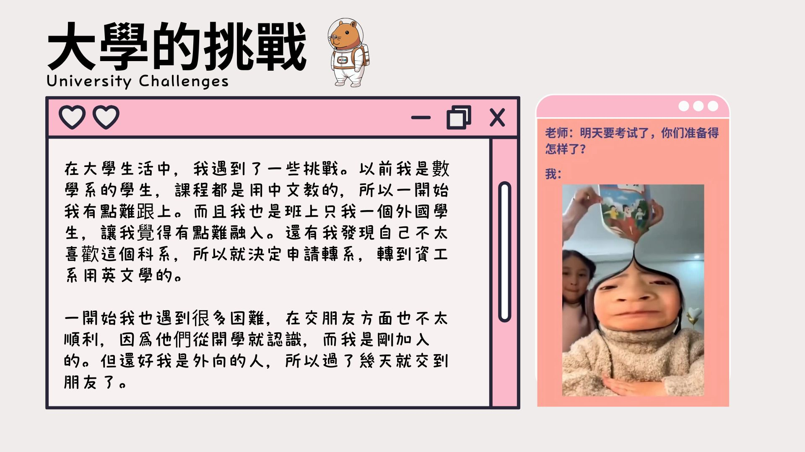

在大學生活中，我遇到了一些挑戰。以前，我是數學系的學生，課程都是用中文教的，所以一開始我有點難跟上。而且我也是班上只我一個外國學生，讓我覺得有點難融入。還有我發現自己不太喜歡這個科系，所以就決定申請轉系，轉到資工系用英文學的。
一開始我也遇到很多困難，在交朋友方面也不太順利，因爲他們從開學就認識，而我是剛加入的。但還好我是外向的人，所以過了幾天就交到朋友了。
In university life, I encountered several challenges. Previously, I was a mathematics major where the courses were taught in Chinese, so it was a bit difficult for me to keep up at first. Additionally, I was the only international student in my class, which made it hard for me to fit in. I also realized that I wasn't very interested in that major, so I decided to apply for a transfer to the Computer Science department, where the courses are taught in English.
In the beginning, I faced many difficulties there as well, especially with making friends since they had already known each other since the start of the semester, while I was a newcomer. Fortunately, I am an extroverted person, so after a few days, I managed to make some friends.
| Chinese (中文) | English (英文) |
|---|---|
| 在大學生活中 | In university life |
| 我遇到了一些挑戰 | I encountered several challenges |
| 以前，我是數學系的學生 | Previously, I was a mathematics major |
| 課程都是用中文教的 | All the courses were taught in Chinese |
| 所以一開始我有點難跟上 | so it was a bit difficult for me to keep up at first |
| 而且我也是班上只我一個外國學生 | Additionally, I was the only international student in my class |
| 讓我覺得有點難融入 | which made it hard for me to fit in |
| 還有我發現自己不太喜歡這個科系 | I also realized that I wasn't very interested in that major |
| 所以就決定申請轉系，轉到資工系用英文學的 | so I decided to apply for a transfer to the Computer Science department, where the courses are taught in English. |
| 一開始我也遇到很多困難 | In the beginning, I faced many difficulties there as well |
| 在交朋友方面也不太順利 | especially with making friends |
| 因爲他們從開學就認識 | because they had already known each other since the start of the semester |
| 而我是剛加入的 | while I was a newcomer |
| 但還好我是外向的人 | Fortunately, I am an extroverted person |
| 所以過了幾天就交到朋友了 | so after a few days, I managed to make some friends |
Vocabulary List(生詞表)
| Chinese Character (漢字) | Pinyin (拼音) | English (英文) |
|---|---|---|
| 大學 | Dàxué | University |
| 生活中 | Shēnghuó zhōng | In life |
| 遇到 | Yùdào | To encounter / To meet |
| 一些 | Yìxiē | Some / A few |
| 挑戰 | Tiǎozhàn | Challenge |
| 以前 | Yǐqián | Before / Previously |
| 數學系 | Shùxué xì | Department of Mathematics |
| 學生 | Xuésheng | Student |
| 課程 | Kèchéng | Course / Curriculum |
| 都 | Dōu | All / Both |
| 用 | Yòng | To use |
| 中文 | Zhōngwén | Chinese |
| 教 | Jiāo | Teach |
| 所以 | Suǒyǐ | So / Therefore |
| 一開始 | Yì kāishǐ | At the beginning |
| 有點 | Yǒudiǎn | A bit / A little |
| 難 | Nán | Difficult |
| 跟上 | Gēn shàng | To keep up with |
| 而且 | Érqiě | Moreover / And also |
| 班上 | Bān shàng | In the class |
| 只 | Zhǐ | Only |
| 外國人 | Wàiguórén | Foreigner |
| 讓我 | Ràng wǒ | Make me / Let me |
| 覺得 | Juéde | Feel |
| 融入 | Róngrù | Fit in / Blend in |
| 還有 | Háiyǒu | Also / And also |
| 發現 | Fāxiàn | Find out / Discover |
| 自己 | Zìjǐ | My own |
| 不太 | Bútài | Not really / Not very |
| 喜歡 | Xǐhuan | To like |
| 這個 | Zhège | This / This one |
| 科系 | Kēxì | Academic department / Major |
| 決定 | Juédìng | To decide / Decision |
| 申請 | Shēnqǐng | To apply |
| 轉系 | Zhuǎnxì | To transfer major |
| 資工系 | Zīgōng xì | Dept. of Computer Science |
| 英文 | Yīngwén | English |
| 困難 | Kùnnán | Difficult / Difficulty |
| 交朋友 | Jiāo péngyǒu | To make friends |
| 方面 | Fāngmiàn | Aspect / Respect |
| 順利 | Shùnlì | Smoothly / Without a hitch |
| 因爲 | Yīnwèi | Because |
| 從 | Cóng | From |
| 開學 | Kāixué | Start of school / Semester begins |
| 認識 | Rènshí | To know / To recognize (someone) |
| 剛 | Gāng | Just / Recently |
| 加入 | Jiārù | To join |
| 還好 | Háihǎo | Fortunately / Not bad |
| 外向的人 | Wàixiàng de rén | Extroverted person / Extrovert |
| 過了 | Guòle | Passed / After (a period of time) |
| 幾天 | Jǐ tiān | A few days |
| 交到 | Jiāo dào | To successfully make (friends) |